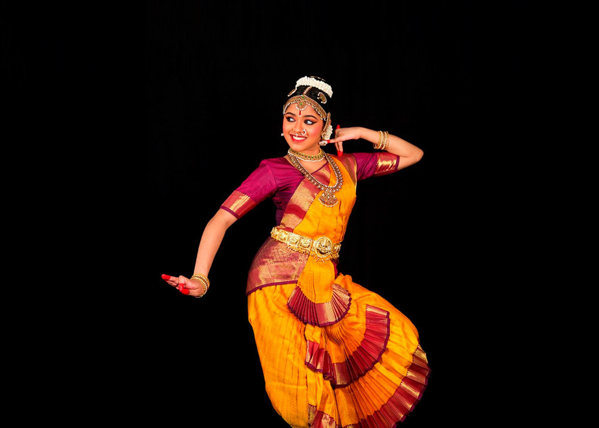

Dance is my favourite hobby and I enjoy dancing a lot. I started dancing when I was five years old and when I got older; my parents enrolled me in dance classes to pursue this passion.
I cannot go a day without dance, that’s how much I love dancing. I tried many dance forms but discovered that I am most comfortable in Indian classical dance. Thus, I am learning Kathak from my dance teacher.
I aspire to become a renowned Kathak dancer so that I can represent this classical dance internationally. Dancing makes me feel happy and relaxed, thus I love to dance. I always participate in dance competitions at my school and have even won a few.
Dance became my passion from an early age. Listening to the beats of a dance number, I started to tap my feet and my parents recognized my talent for dance. Even when I am sad, I put on music to dance to vent out my feelings.
Thus, dance has been very therapeutic for me as well. In other words, it is not only an escape from the world but also a therapy for me.